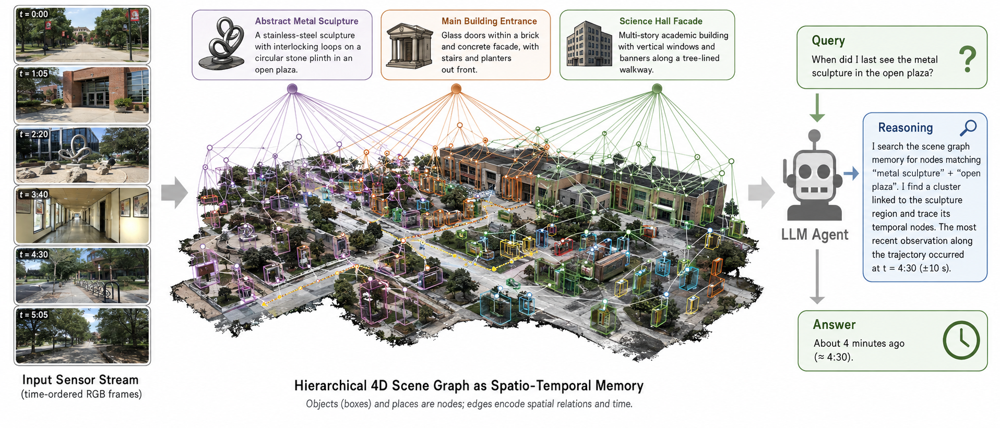
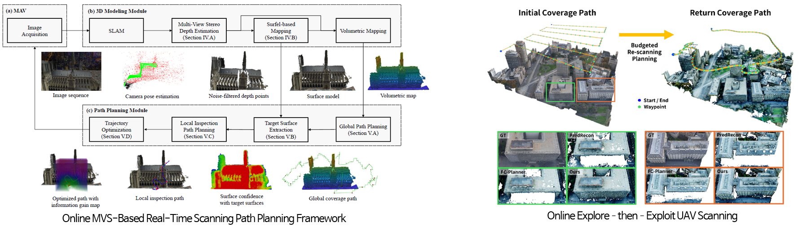
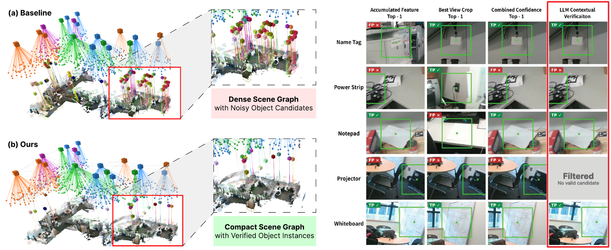
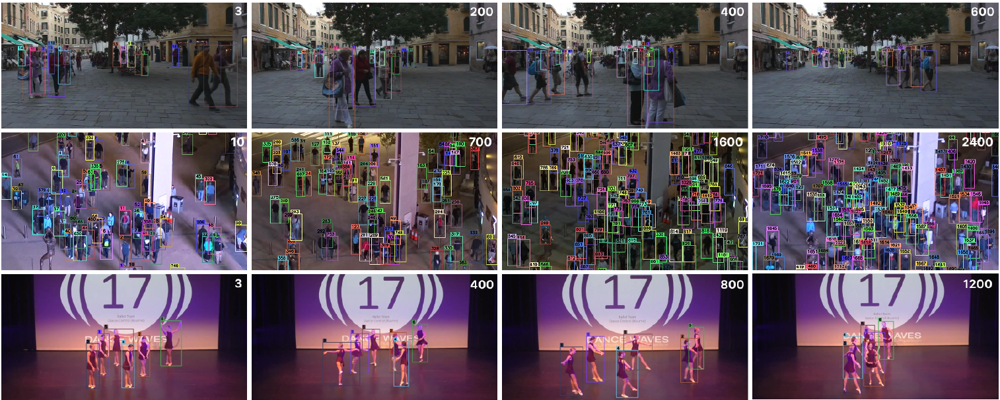

We work on visual localization, 3D reconstruction, scanning, and scene understanding, enabling robots to build and continually update accurate 3D representations of their surroundings.

Image-based real-time, high-precision camera localization and 3D mapping technology.

3D reconstruction technology based on multi-view stereo (MVS) and 3D Gaussian Splatting (3DGS).

Performs real-time 3D reconstruction from drone aerial imagery (online MVS), instantly identifies weakly-reconstructed regions, and plans an optimal re-scanning path — enabling complete 3D scanning of large-scale structures in a single flight.
4 top-tier robotics conference papers (ICRA-17/18/20, IROS-26) · 1 top journal, IEEE T-RO (top 7.3%) · 4 SCIE papersOptimal 3D scanning path-planning technology.

We propose a feed-forward framework that combines LLM-generated spatial constraints with best-view visual confidence to build verified 3D scene graphs consistent with the real environment — filtering false-positive objects without costly iterative updates, and generating reliable subtask sequences from verified objects only.
Spatial-constraint-based 3D scene graph and task-planning technology.

On-going research.
